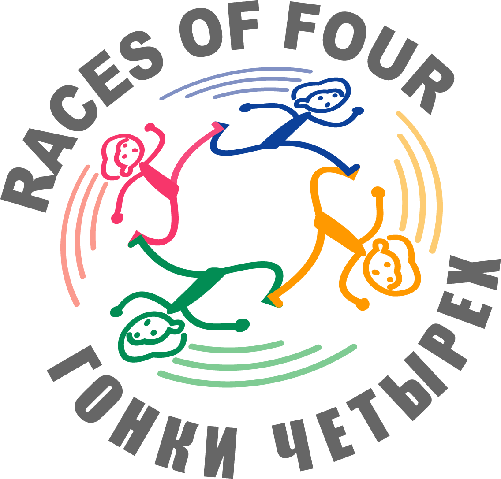
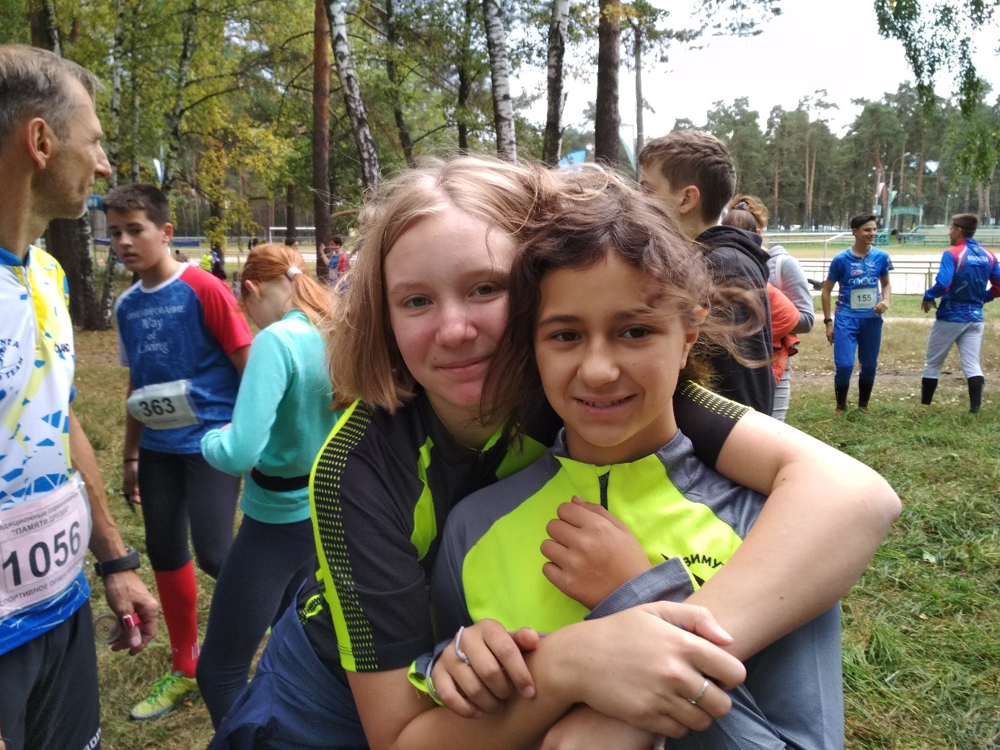
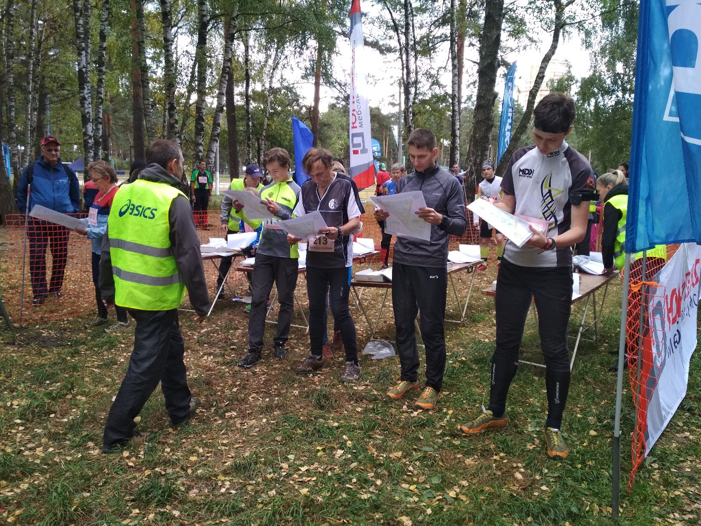
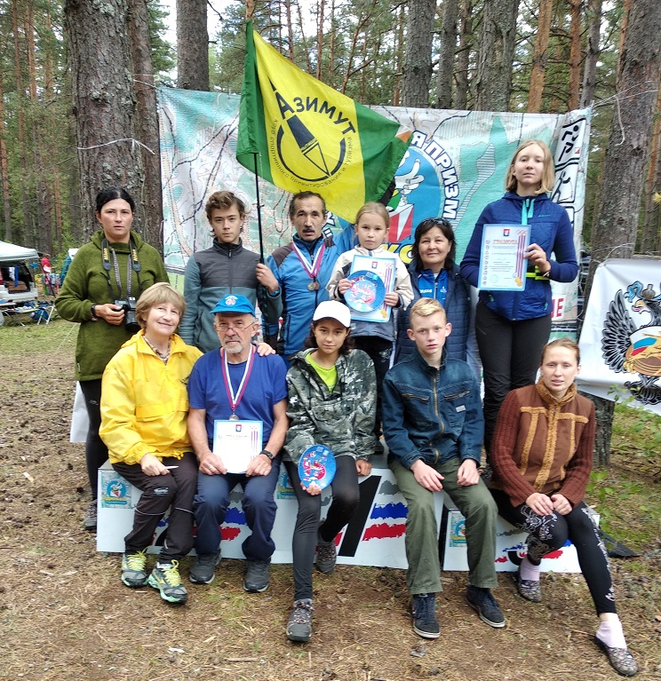
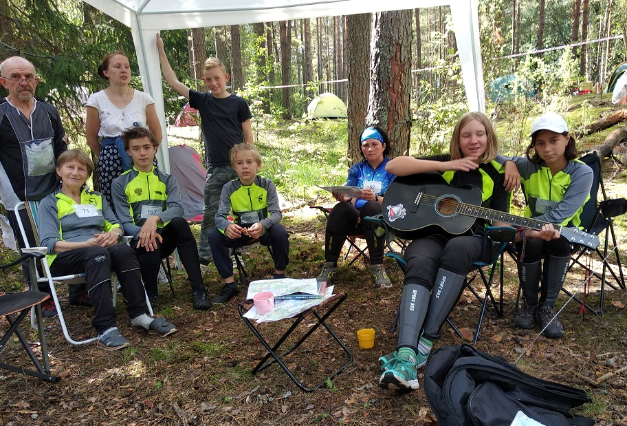
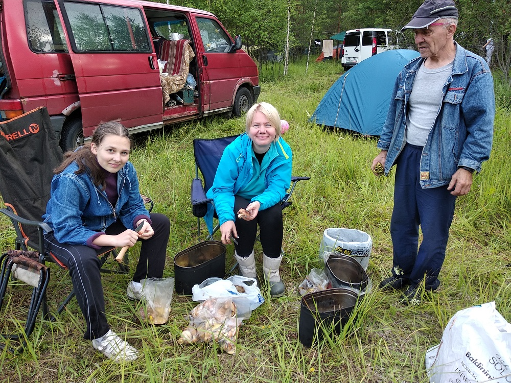
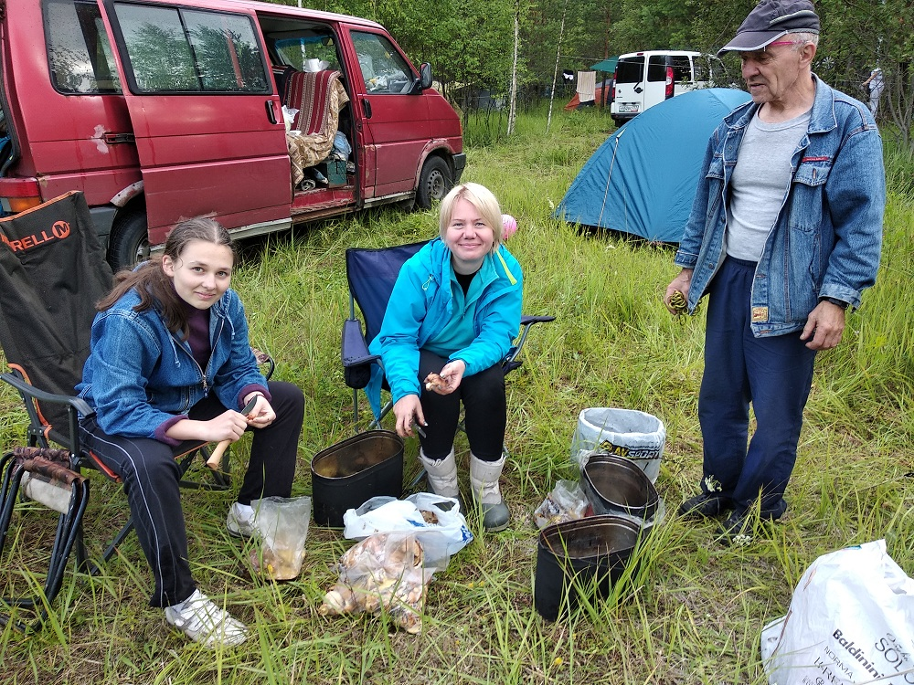
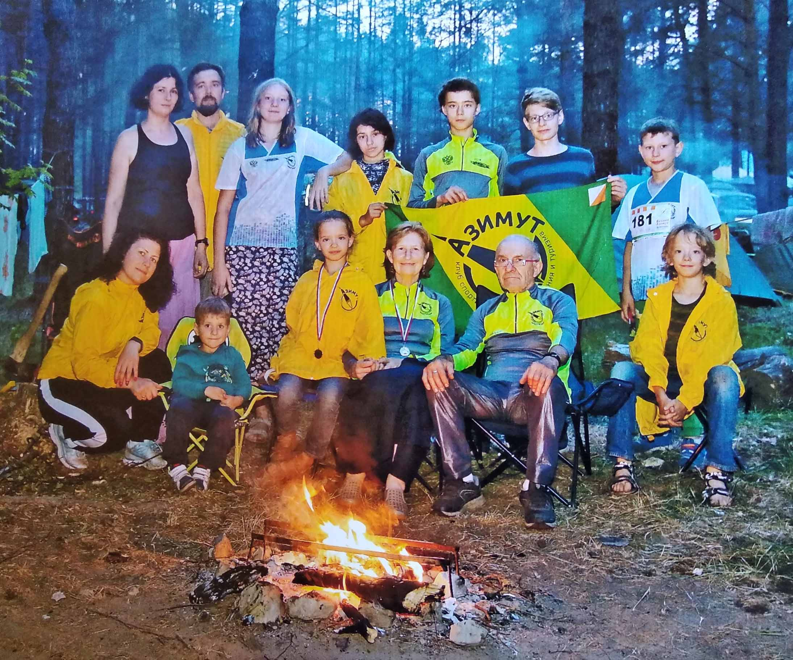
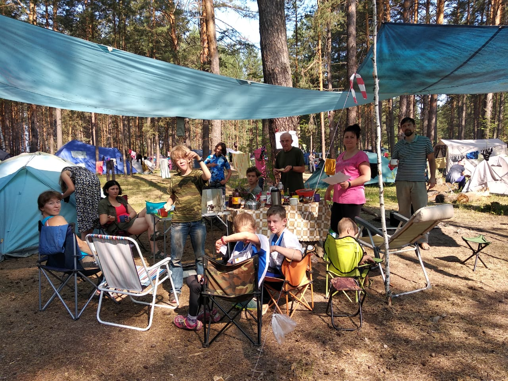

Новости Клуба:
14 сен 2019
Клуб "Азимут Мытищи" 28-29 сентября 2019 года приняли участие в самых массовых соревнованиях в мире по спортивному туризму на пешеходных дистанциях.
Всероссийские соревнования по спортивному туризму «Гонки четырех». Город Лыткарино Московской области.
В течение двух дней в подмосковном лесу команды туристов разного возраста соревновались на дистанциях пяти уровней сложности – от самого простого 1 класса, до дистанции 5 класса, на которой возможно выполнение норматива Кандидата мастера спорта. Команда состоит из четырех человек одного пола. Стартующие получают карту местности с обозначенными контрольными пунктами этапа ориентирования и местами расположения верёвочных этапов, а также с заданной последовательностью их прохождения. Выигрывает команда, успешно преодолевшая всю дистанцию за наименьшее время.

29 сен 2019
Клуб "Азимут Мытищи" 28-29 сентября 2019 года приняли участие в самых массовых соревнованиях в мире по спортивному туризму на пешеходных дистанциях.
Всероссийские соревнования по спортивному туризму «Гонки четырех». Город Лыткарино Московской области.
В течение двух дней в подмосковном лесу команды туристов разного возраста соревновались на дистанциях пяти уровней сложности – от самого простого 1 класса, до дистанции 5 класса, на которой возможно выполнение норматива Кандидата мастера спорта. Команда состоит из четырех человек одного пола. Стартующие получают карту местности с обозначенными контрольными пунктами этапа ориентирования и местами расположения верёвочных этапов, а также с заданной последовательностью их прохождения. Выигрывает команда, успешно преодолевшая всю дистанцию за наименьшее время.


25 авг 2019
КСО "Азимут Мытищи" съездил на соревнования "Хрустальная призма" во Владимирской области. Жили в живописном месте на берегу реки Гусь. Вернулись с призами:
Ульяна Парамонова - 1 место
Владимир Жучков - 2 место
Соревнования очень понравились. Спасибо организаторам!


29 июл 2019
В июне мы съездили на моногодневные соревнования "Макушка лета" в Ярославской области.
Интересные, хорошо прорисованные карты, сложные, но интересные дистанции. Лагерь стоял в красивейших местах на берегу озера.
 

10 июн 2019
С 5 по 9 июня КСО "Азимут Мытищи" участвовал в соревнованиях по спортивному ориентированию "Вачский Азимут" в Нижегородской области, с. Филинское. Соревнования масштабные, больше тысячи участников из разных городов России.
Очень красивое место, интересные дистанции, хорошая компания.
Приятной неожиданностью стало карстовое озеро рядом с лагерем, после жары и слепней на дистанции оно очень помогало. 💦😃
Хочется отметить очень душевную атмосферу соревнований, не зря их называют "Душевные старты". При необходимости на дистанции всегда помогут.
За 4 дня было проведено 4 дневных старта и 1 ночной.


27 дек 2018
В клубе Спортивного Ориентирования и Туризма "Азимут Мытищи" прошёл праздник посвящённый наступлению Нового 2019 Года!
03 янв 2019
КСО "АЗИМУТ МЫТИЩИ" провёл очередной чемпионат города по спортивному ориентированию. Соревнования проходили в Лосиноостровском лесопарке и принять в них участие могли все желающие.
21 июн 2018
Закончился 9-ый (с нашим участием) " Вачский Азимут". Как всегда сложные карты с карстовым рельефом, интересные техничные дистанции и много мероприятий: спортивный лабиринт, концерт, экскурсия. Душевная атмосфера в лагере, вкусная еда (Спасибо всем!), посиделки у костра, для желающих купание в чистом карстовом озере, спектакли в стихах на экологическую тему - все было прекрасно. 13 медалей - неплохой улов! А главное - все "подросли" в ориентировании. Ура!